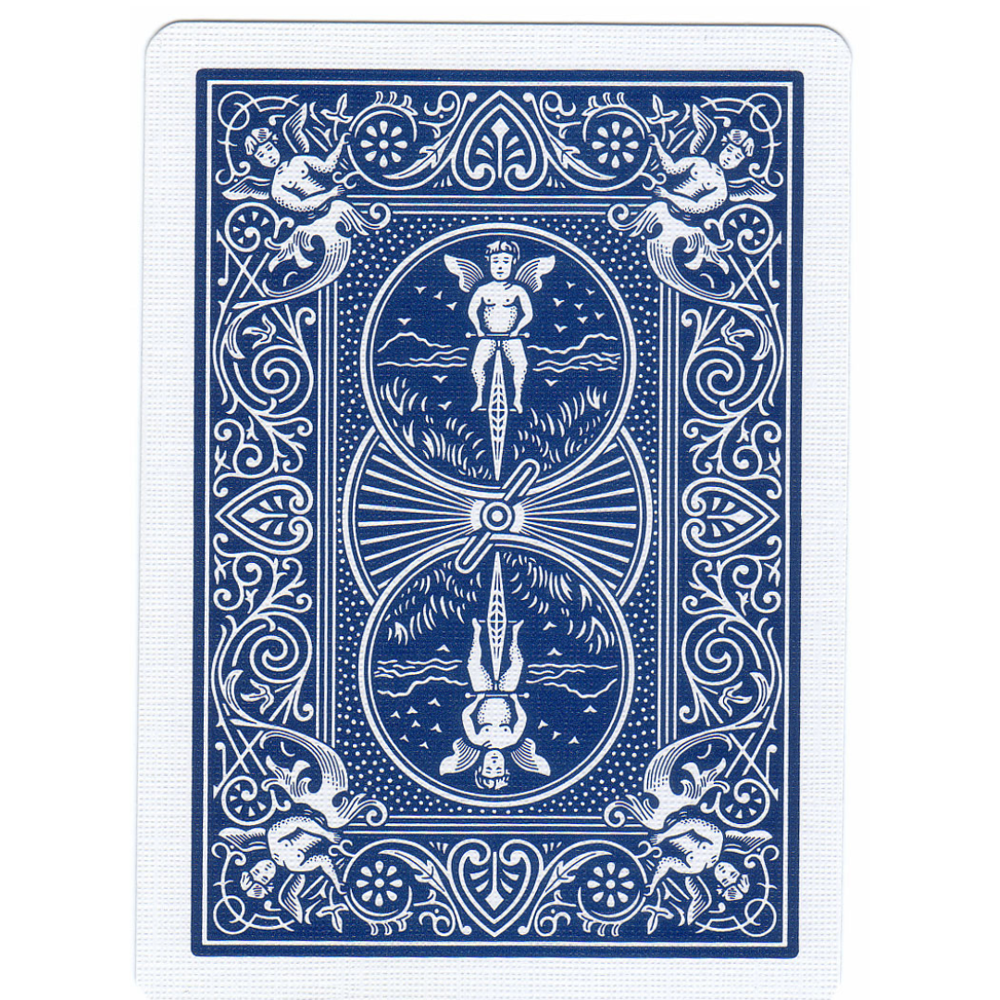
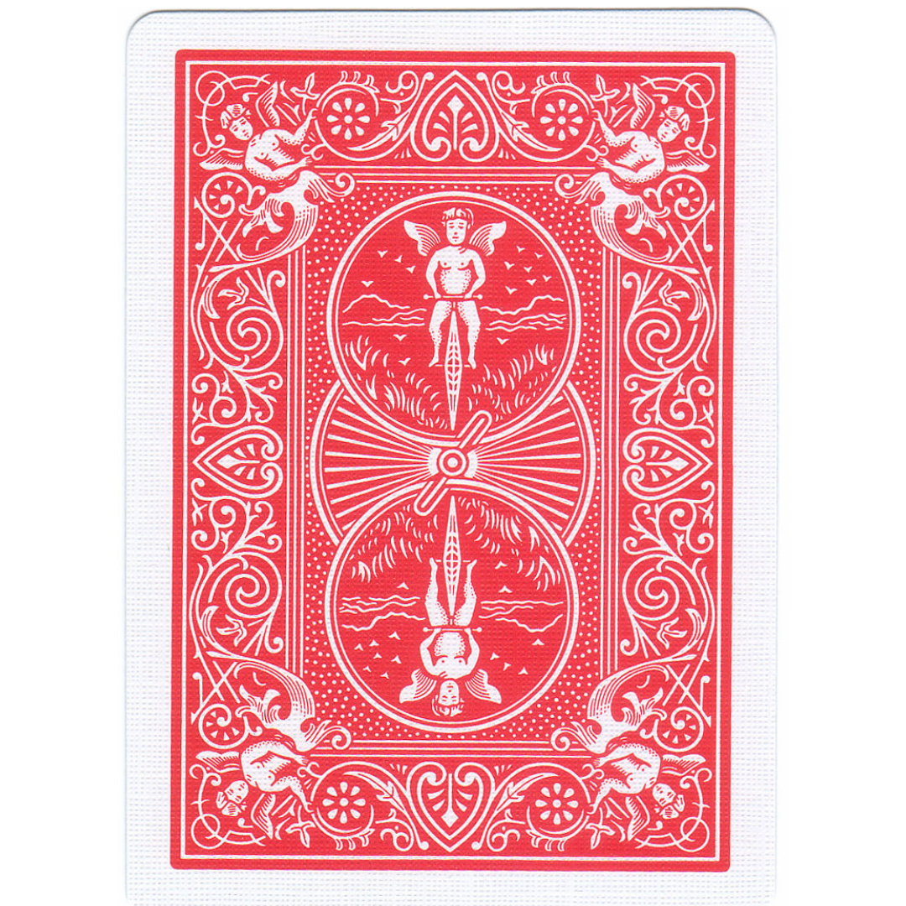

<!DOCTYPE html>
<html>
  <head>
    <style>
      .hide_cursor {
        cursor: none;
      }
    </style>
    <title>My experiment</title>
    <script src="jspsych/plugins/jspsych.js"></script>
    <script src="jspsych/plugins/plugin-instructions.js"></script>
    <script src="jspsych/plugins/plugin-survey-text.js"></script>
    <script src="jspsych/plugins/plugin-html-keyboard-response.js"></script>
    <script src="jspsych/plugins/plugin-survey-likert.js"></script>
    <script src="jspsych/plugins/plugin-html-button-response.js"></script>
    <script src="jspsych/plugins/plugin-fullscreen.js"></script>
    <script src="jspsych/plugins/plugin-preload.js"></script>
    <link rel="stylesheet" href="jspsych/css/jspsych.css">
  </head>
  <body></body>
  <script>
    var data_folder = 'data/';

    function saveData(name, data){
      var xhr = new XMLHttpRequest();
      xhr.open('POST', 'write_data.php');
      xhr.setRequestHeader('Content-Type', 'application/json');
      xhr.send(JSON.stringify({filedata: data}));
    }

    var jsPsych = initJsPsych({
      on_finish: function() {
        saveData(data_folder+'All_data/all_data_sub_'+subject_id+".csv", jsPsych.data.get().csv());
      }
    });

    var timeline = [];

    // Adding subject properties
    var subject_id = jsPsych.data.getURLVariable('participantId');
    var study_id = jsPsych.data.getURLVariable('assignmentId');
    var session_id = jsPsych.data.getURLVariable('projectId');

    jsPsych.data.addProperties({
      subject_id: subject_id,
      study_id: study_id,
      session_id: session_id,
    });

    // Preload images
    var preload = {
      type: jsPsychPreload,
      images: [
        'consent_form_2022.png',
        'images/blue_deck_1.png',
        'images/red_deck_2.png',
'images/causal/causal_series_1/causal_series_1_a.jpg',
'images/causal/causal_series_2/causal_series_2_a.jpg',
'images/causal/causal_series_3/causal_series_3_a.jpg',
'images/causal/causal_series_4/causal_series_4_a.jpg',
'images/causal/causal_series_5/causal_series_5_a.jpg',
'images/causal/causal_series_6/causal_series_6_a.jpg',
'images/causal/causal_series_7/causal_series_7_a.jpg',
'images/causal/causal_series_8/causal_series_8_a.jpg',
'images/causal/causal_series_9/causal_series_9_a.jpg',
'images/causal/causal_series_10/causal_series_10_a.jpg',
'images/causal/causal_series_11/causal_series_11_a.jpg',
'images/causal/causal_series_12/causal_series_12_a.jpg',
'images/causal/causal_series_13/causal_series_13_a.jpg',
'images/causal/causal_series_14/causal_series_14_a.jpg',
'images/causal/causal_series_15/causal_series_15_a.jpg',
'images/causal/causal_series_16/causal_series_16_a.jpg',
'images/causal/causal_series_17/causal_series_17_a.jpg',
'images/causal/causal_series_18/causal_series_18_a.jpg',
'images/causal/causal_series_1/causal_series_1_b.jpg',
'images/causal/causal_series_2/causal_series_2_b.jpg',
'images/causal/causal_series_3/causal_series_3_b.jpg',
'images/causal/causal_series_4/causal_series_4_b.jpg',
'images/causal/causal_series_5/causal_series_5_b.jpg',
'images/causal/causal_series_6/causal_series_6_b.jpg',
'images/causal/causal_series_7/causal_series_7_b.jpg',
'images/causal/causal_series_8/causal_series_8_b.jpg',
'images/causal/causal_series_9/causal_series_9_b.jpg',
'images/causal/causal_series_10/causal_series_10_b.jpg',
'images/causal/causal_series_11/causal_series_11_b.jpg',
'images/causal/causal_series_12/causal_series_12_b.jpg',
'images/causal/causal_series_13/causal_series_13_b.jpg',
'images/causal/causal_series_14/causal_series_14_b.jpg',
'images/causal/causal_series_15/causal_series_15_b.jpg',
'images/causal/causal_series_16/causal_series_16_b.jpg',
'images/causal/causal_series_17/causal_series_17_b.jpg',
'images/causal/causal_series_18/causal_series_18_b.jpg',
'images/causal/causal_series_1/causal_series_1_c.jpg',
'images/causal/causal_series_2/causal_series_2_c.jpg',
'images/causal/causal_series_3/causal_series_3_c.jpg',
'images/causal/causal_series_4/causal_series_4_c.jpg',
'images/causal/causal_series_5/causal_series_5_c.jpg',
'images/causal/causal_series_6/causal_series_6_c.jpg',
'images/causal/causal_series_7/causal_series_7_c.jpg',
'images/causal/causal_series_8/causal_series_8_c.jpg',
'images/causal/causal_series_9/causal_series_9_c.jpg',
'images/causal/causal_series_10/causal_series_10_c.jpg',
'images/causal/causal_series_11/causal_series_11_c.jpg',
'images/causal/causal_series_12/causal_series_12_c.jpg',
'images/causal/causal_series_13/causal_series_13_c.jpg',
'images/causal/causal_series_14/causal_series_14_c.jpg',
'images/causal/causal_series_15/causal_series_15_c.jpg',
'images/causal/causal_series_16/causal_series_16_c.jpg',
'images/causal/causal_series_17/causal_series_17_c.jpg',
'images/causal/causal_series_18/causal_series_18_c.jpg',
'images/semantic/semantic_series_1/semantic_series_1_d.jpg',
'images/semantic/semantic_series_2/semantic_series_2_d.jpg',
'images/semantic/semantic_series_3/semantic_series_3_d.jpg',
'images/semantic/semantic_series_4/semantic_series_4_d.jpg',
'images/semantic/semantic_series_5/semantic_series_5_d.jpg',
'images/semantic/semantic_series_6/semantic_series_6_d.jpg',
'images/semantic/semantic_series_7/semantic_series_7_d.jpg',
'images/semantic/semantic_series_8/semantic_series_8_d.jpg',
'images/semantic/semantic_series_9/semantic_series_9_d.jpg',
'images/semantic/semantic_series_10/semantic_series_10_d.jpg',
'images/semantic/semantic_series_11/semantic_series_11_d.jpg',
'images/semantic/semantic_series_12/semantic_series_12_d.jpg',
'images/semantic/semantic_series_13/semantic_series_13_d.jpg',
'images/semantic/semantic_series_14/semantic_series_14_d.jpg',
'images/semantic/semantic_series_15/semantic_series_15_d.jpg',
'images/semantic/semantic_series_16/semantic_series_16_d.jpg',
'images/semantic/semantic_series_17/semantic_series_17_d.jpg',
'images/semantic/semantic_series_18/semantic_series_18_d.jpg',
      ]
    };
    timeline.push(preload);


    var trial_0 = {
      type: jsPsychInstructions,
      pages: [
        '<div style="font-family: Arial; background: var(--grey); padding: 100px; padding-top: 5%; text-align: left;">' +
        '<h2>Thank you for participating in this experiment!</h2>' +
        '<p>By clicking the "Begin Study" button, you will be taken to the study, including complete instructions and an informed consent agreement.</p>'
      ],
      show_clickable_nav: true
    };

    var trial_consent = {
      type: jsPsychInstructions,
      pages: [
        '<div style="text-align:center; font-family:Arial; font-size: 22px; padding-top:20px;">' +
        '<p>Please carefully read the consent form below before proceeding.</p>' +
        '</img>' +
        '</div>'
      ],
      show_clickable_nav: true
    };

    var trial_01 = {
      type: jsPsychFullscreen,
      fullscreen_mode: true
    };

    var instructions_deck_choice = {
  type: jsPsychInstructions,
  pages: [
    '<div style="font-family: Arial; text-align: left; padding: 100px; padding-top: 5%;">' +
    '<h2>Instructions</h2>' +
    '<p>In this experiment, you will be asked to choose between two decks of cards: one red and one blue.</p>' +
    '<p>Please make your choice intuitively, selecting the deck that seems more interesting to you.</p>' +
    '<p>You are welcome to explore the differences between the two decks as you go along.</p>' +
    '<p>There is no right or wrong choice—simply go with your instinct.</p>' +
    '<p>When you are ready, press "Next" to begin.</p>' +
    '</div>'
  ],
  show_clickable_nav: true
};

timeline.push(trial_0, trial_consent, trial_01, instructions_deck_choice);


    // Function to create a trial for each image with a 3-second gap
    function createImageTrial(imagePath) {
      return {
        type: jsPsychHtmlKeyboardResponse,
        stimulus: `<div style="display: flex; justify-content: center; align-items: center;">
                    
                  </div>`,
        choices: "NO_KEYS",
        trial_duration: 1000
      };
    }

    // Display the first 3 images from the causal sequence
    var first_three_causal_1 = [
      createImageTrial('images/causal/causal_series_1/causal_series_1_a.jpg'),
      createImageTrial('images/causal/causal_series_1/causal_series_1_b.jpg'),
      createImageTrial('images/causal/causal_series_1/causal_series_1_c.jpg')
    ];

    var first_three_causal_2 = [
      createImageTrial('images/causal/causal_series_2/causal_series_2_a.jpg'),
      createImageTrial('images/causal/causal_series_2/causal_series_2_b.jpg'),
      createImageTrial('images/causal/causal_series_2/causal_series_2_c.jpg')
    ];

    var first_three_causal_3 = [
  createImageTrial('images/causal/causal_series_3/causal_series_3_a.jpg'),
  createImageTrial('images/causal/causal_series_3/causal_series_3_b.jpg'),
  createImageTrial('images/causal/causal_series_3/causal_series_3_c.jpg')
];

var first_three_causal_4 = [
  createImageTrial('images/causal/causal_series_4/causal_series_4_a.jpg'),
  createImageTrial('images/causal/causal_series_4/causal_series_4_b.jpg'),
  createImageTrial('images/causal/causal_series_4/causal_series_4_c.jpg')
];


var first_three_causal_5 = [
  createImageTrial('images/causal/causal_series_5/causal_series_5_a.jpg'),
  createImageTrial('images/causal/causal_series_5/causal_series_5_b.jpg'),
  createImageTrial('images/causal/causal_series_5/causal_series_5_c.jpg')
];


var first_three_causal_6 = [
  createImageTrial('images/causal/causal_series_6/causal_series_6_a.jpg'),
  createImageTrial('images/causal/causal_series_6/causal_series_6_b.jpg'),
  createImageTrial('images/causal/causal_series_6/causal_series_6_c.jpg')
];


var first_three_causal_7 = [
  createImageTrial('images/causal/causal_series_7/causal_series_7_a.jpg'),
  createImageTrial('images/causal/causal_series_7/causal_series_7_b.jpg'),
  createImageTrial('images/causal/causal_series_7/causal_series_7_c.jpg')
];


var first_three_causal_8 = [
  createImageTrial('images/causal/causal_series_8/causal_series_8_a.jpg'),
  createImageTrial('images/causal/causal_series_8/causal_series_8_b.jpg'),
  createImageTrial('images/causal/causal_series_8/causal_series_8_c.jpg')
];

var first_three_causal_9 = [
  createImageTrial('images/causal/causal_series_9/causal_series_9_a.jpg'),
  createImageTrial('images/causal/causal_series_9/causal_series_9_b.jpg'),
  createImageTrial('images/causal/causal_series_9/causal_series_9_c.jpg')
];

var first_three_causal_10 = [
  createImageTrial('images/causal/causal_series_10/causal_series_10_a.jpg'),
  createImageTrial('images/causal/causal_series_10/causal_series_10_b.jpg'),
  createImageTrial('images/causal/causal_series_10/causal_series_10_c.jpg')
];

var first_three_causal_11 = [
  createImageTrial('images/causal/causal_series_11/causal_series_11_a.jpg'),
  createImageTrial('images/causal/causal_series_11/causal_series_11_b.jpg'),
  createImageTrial('images/causal/causal_series_11/causal_series_11_c.jpg')
];

var first_three_causal_12 = [
  createImageTrial('images/causal/causal_series_12/causal_series_12_a.jpg'),
  createImageTrial('images/causal/causal_series_12/causal_series_12_b.jpg'),
  createImageTrial('images/causal/causal_series_12/causal_series_12_c.jpg')
];

var first_three_causal_13 = [
  createImageTrial('images/causal/causal_series_13/causal_series_13_a.jpg'),
  createImageTrial('images/causal/causal_series_13/causal_series_13_b.jpg'),
  createImageTrial('images/causal/causal_series_13/causal_series_13_c.jpg')
];

var first_three_causal_14 = [
  createImageTrial('images/causal/causal_series_14/causal_series_14_a.jpg'),
  createImageTrial('images/causal/causal_series_14/causal_series_14_b.jpg'),
  createImageTrial('images/causal/causal_series_14/causal_series_14_c.jpg')
];

var first_three_causal_15 = [
  createImageTrial('images/causal/causal_series_15/causal_series_15_a.jpg'),
  createImageTrial('images/causal/causal_series_15/causal_series_15_b.jpg'),
  createImageTrial('images/causal/causal_series_15/causal_series_15_c.jpg')
];

var first_three_causal_16 = [
  createImageTrial('images/causal/causal_series_16/causal_series_16_a.jpg'),
  createImageTrial('images/causal/causal_series_16/causal_series_16_b.jpg'),
  createImageTrial('images/causal/causal_series_16/causal_series_16_c.jpg')
];

var first_three_causal_17 = [
  createImageTrial('images/causal/causal_series_17/causal_series_17_a.jpg'),
  createImageTrial('images/causal/causal_series_17/causal_series_17_b.jpg'),
  createImageTrial('images/causal/causal_series_17/causal_series_17_c.jpg')
];

var first_three_causal_18 = [
  createImageTrial('images/causal/causal_series_18/causal_series_18_a.jpg'),
  createImageTrial('images/causal/causal_series_18/causal_series_18_b.jpg'),
  createImageTrial('images/causal/causal_series_18/causal_series_18_c.jpg')
];


    var clean_deck = [
      
      createImageTrial('images/other/blank.jpg')

    ];


    // Add a trial where participant chooses between causal and semantic series for the fourth image
    var choose_next_image = {
      type: jsPsychHtmlButtonResponse,
      stimulus: `
        <div style="display: flex; justify-content: center; align-items: center;">
          
          
        </div>`,
      choices: ['deck 1', 'deck 2'],
      on_finish: function(data) {
        data.choice = data.response;
      }
    };
    // Create trials for fourth images for all 18 causal and semantic series
function createFourthImageTrial(causalImagePath, semanticImagePath) {
  return {
    timeline: [
      {
        conditional_function: function() {
          var last_choice = jsPsych.data.getLastTrialData().values()[0].response;
          return last_choice == 0; // Causal image chosen
        },
        timeline: [
          createImageTrial(causalImagePath)
        ]
      },
      {
        conditional_function: function() {
          var last_choice = jsPsych.data.getLastTrialData().values()[0].response;
          return last_choice == 1; // Semantic image chosen
        },
        timeline: [
          createImageTrial(semanticImagePath)
        ]
      }
    ]
  };
}

// Create show_fourth_image trials
var show_fourth_image_1 = createFourthImageTrial('images/causal/causal_series_1/causal_series_1_d.jpg', 'images/semantic/semantic_series_1/semantic_series_1_d.jpg');
var show_fourth_image_2 = createFourthImageTrial('images/causal/causal_series_2/causal_series_2_d.jpg', 'images/semantic/semantic_series_2/semantic_series_2_d.jpg');
var show_fourth_image_3 = createFourthImageTrial('images/causal/causal_series_3/causal_series_3_d.jpg', 'images/semantic/semantic_series_3/semantic_series_3_d.jpg');
var show_fourth_image_4 = createFourthImageTrial('images/causal/causal_series_4/causal_series_4_d.jpg', 'images/semantic/semantic_series_4/semantic_series_4_d.jpg');
var show_fourth_image_5 = createFourthImageTrial('images/causal/causal_series_5/causal_series_5_d.jpg', 'images/semantic/semantic_series_5/semantic_series_5_d.jpg');
var show_fourth_image_6 = createFourthImageTrial('images/causal/causal_series_6/causal_series_6_d.jpg', 'images/semantic/semantic_series_6/semantic_series_6_d.jpg');
var show_fourth_image_7 = createFourthImageTrial('images/causal/causal_series_7/causal_series_7_d.jpg', 'images/semantic/semantic_series_7/semantic_series_7_d.jpg');
var show_fourth_image_8 = createFourthImageTrial('images/causal/causal_series_8/causal_series_8_d.jpg', 'images/semantic/semantic_series_8/semantic_series_8_d.jpg');
var show_fourth_image_9 = createFourthImageTrial('images/causal/causal_series_9/causal_series_9_d.jpg', 'images/semantic/semantic_series_9/semantic_series_9_d.jpg');
var show_fourth_image_10 = createFourthImageTrial('images/causal/causal_series_10/causal_series_10_d.jpg', 'images/semantic/semantic_series_10/semantic_series_10_d.jpg');
var show_fourth_image_11 = createFourthImageTrial('images/causal/causal_series_11/causal_series_11_d.jpg', 'images/semantic/semantic_series_11/semantic_series_11_d.jpg');
var show_fourth_image_12 = createFourthImageTrial('images/causal/causal_series_12/causal_series_12_d.jpg', 'images/semantic/semantic_series_12/semantic_series_12_d.jpg');
var show_fourth_image_13 = createFourthImageTrial('images/causal/causal_series_13/causal_series_13_d.jpg', 'images/semantic/semantic_series_13/semantic_series_13_d.jpg');
var show_fourth_image_14 = createFourthImageTrial('images/causal/causal_series_14/causal_series_14_d.jpg', 'images/semantic/semantic_series_14/semantic_series_14_d.jpg');
var show_fourth_image_15 = createFourthImageTrial('images/causal/causal_series_15/causal_series_15_d.jpg', 'images/semantic/semantic_series_15/semantic_series_15_d.jpg');
var show_fourth_image_16 = createFourthImageTrial('images/causal/causal_series_16/causal_series_16_d.jpg', 'images/semantic/semantic_series_16/semantic_series_16_d.jpg');
var show_fourth_image_17 = createFourthImageTrial('images/causal/causal_series_17/causal_series_17_d.jpg', 'images/semantic/semantic_series_17/semantic_series_17_d.jpg');
var show_fourth_image_18 = createFourthImageTrial('images/causal/causal_series_18/causal_series_18_d.jpg', 'images/semantic/semantic_series_18/semantic_series_18_d.jpg');


    // Conditional trials based on the choice
    var show_fourth_image_2 = {
      timeline: [
        {
          conditional_function: function() {
            var last_choice = jsPsych.data.getLastTrialData().values()[0].response;
            return last_choice == 0; // Causal image chosen
          },
          timeline: [
            createImageTrial('images/causal/causal_series_2/causal_series_2_d.jpg')
          ]
        },
        {
          conditional_function: function() {
            var last_choice = jsPsych.data.getLastTrialData().values()[0].response;
            return last_choice == 1; // Semantic image chosen
          },
          timeline: [
            createImageTrial('images/semantic/semantic_series_2/semantic_series_2_d.jpg')
          ]
        }
      ]
    };

    // Add trials to the timeline
timeline.push(...first_three_causal_1);
timeline.push(choose_next_image);
timeline.push(show_fourth_image_1);
timeline.push(...clean_deck);

timeline.push(...first_three_causal_2);
timeline.push(choose_next_image);
timeline.push(show_fourth_image_2);
timeline.push(...clean_deck);

timeline.push(...first_three_causal_3);
timeline.push(choose_next_image);
timeline.push(show_fourth_image_3);
timeline.push(...clean_deck);

timeline.push(...first_three_causal_4);
timeline.push(choose_next_image);
timeline.push(show_fourth_image_4);
timeline.push(...clean_deck);

timeline.push(...first_three_causal_5);
timeline.push(choose_next_image);
timeline.push(show_fourth_image_5);
timeline.push(...clean_deck);

timeline.push(...first_three_causal_6);
timeline.push(choose_next_image);
timeline.push(show_fourth_image_6);
timeline.push(...clean_deck);

timeline.push(...first_three_causal_7);
timeline.push(choose_next_image);
timeline.push(show_fourth_image_7);
timeline.push(...clean_deck);

timeline.push(...first_three_causal_8);
timeline.push(choose_next_image);
timeline.push(show_fourth_image_8);
timeline.push(...clean_deck);

timeline.push(...first_three_causal_9);
timeline.push(choose_next_image);
timeline.push(show_fourth_image_9);
timeline.push(...clean_deck);

timeline.push(...first_three_causal_10);
timeline.push(choose_next_image);
timeline.push(show_fourth_image_10);
timeline.push(...clean_deck);

timeline.push(...first_three_causal_11);
timeline.push(choose_next_image);
timeline.push(show_fourth_image_11);
timeline.push(...clean_deck);

timeline.push(...first_three_causal_12);
timeline.push(choose_next_image);
timeline.push(show_fourth_image_12);
timeline.push(...clean_deck);

timeline.push(...first_three_causal_13);
timeline.push(choose_next_image);
timeline.push(show_fourth_image_13);
timeline.push(...clean_deck);

timeline.push(...first_three_causal_14);
timeline.push(choose_next_image);
timeline.push(show_fourth_image_14);
timeline.push(...clean_deck);

timeline.push(...first_three_causal_15);
timeline.push(choose_next_image);
timeline.push(show_fourth_image_15);
timeline.push(...clean_deck);

timeline.push(...first_three_causal_16);
timeline.push(choose_next_image);
timeline.push(show_fourth_image_16);
timeline.push(...clean_deck);

timeline.push(...first_three_causal_17);
timeline.push(choose_next_image);
timeline.push(show_fourth_image_17);
timeline.push(...clean_deck);

timeline.push(...first_three_causal_18);
timeline.push(choose_next_image);
timeline.push(show_fourth_image_18);
timeline.push(...clean_deck);

    // Add final trials (e.g., gender, age questions, etc.)
    var trial_101 = {
      type: jsPsychSurveyText,
      questions: [
        {prompt: 'Please insert your gender (MALE/ FEMALE/ OTHER)'},
        {prompt: 'Please insert your age'}
      ]
    };
    timeline.push(trial_101);

    var trial_102 = {
      type: jsPsychInstructions,
      pages: [
        '<span style="color: black; font-size: 24px">You have completed the experiment.' + 
        '<br/>The completion code is : AJFHBG896<br/>Thank you for your participation!</span>'
      ],
      show_clickable_nav: true
    };
    timeline.push(trial_102);

    // Run the experiment
    jsPsych.run(timeline);
  </script>
</html>
